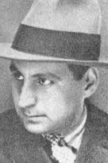

Criticul care a modelat conștiința literară națională
Călinescu – un critic care a dat literaturii române un rol universal
Călinescu a reușit, de asemenea, să plaseze literatura română într-un dialog constant cu marile curente literare europene. Comparându-l pe Eminescu cu Byron și Goethe, el a arătat că, deși influențată de romantismul european, literatura română are o voce distinctă, fiind capabilă să articuleze specificul național. Aceasta a fost o contribuție imensă la modelarea conștiinței naționale, deoarece Călinescu a demonstrat că literatura noastră poate sta alături de cele europene și poate aduce o contribuție unică.
Călinescu este recunoscut pentru abilitatea sa de a construi o „arhitectură de idei” în critica literară, ceea ce îl diferențiază de alți critici contemporani. El nu s-a limitat la o simplă enumerare a autorilor și operelor, ci a integrat fiecare text literar în contextul său istoric, social și cultural, analizând influențele externe și interne care au modelat literatura română. Această metodă de abordare a condus la o înțelegere mai profundă a dinamicii literaturii și a evoluției curentelor artistice, făcându-l pe Călinescu un veritabil arhitect al literaturii române.
